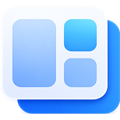
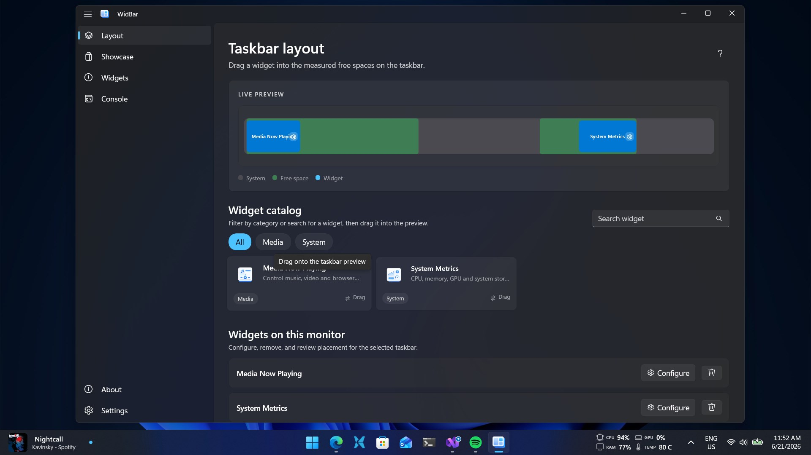
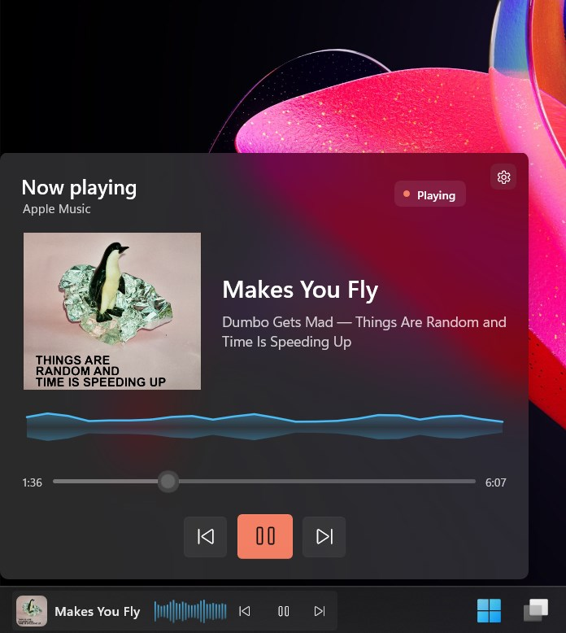
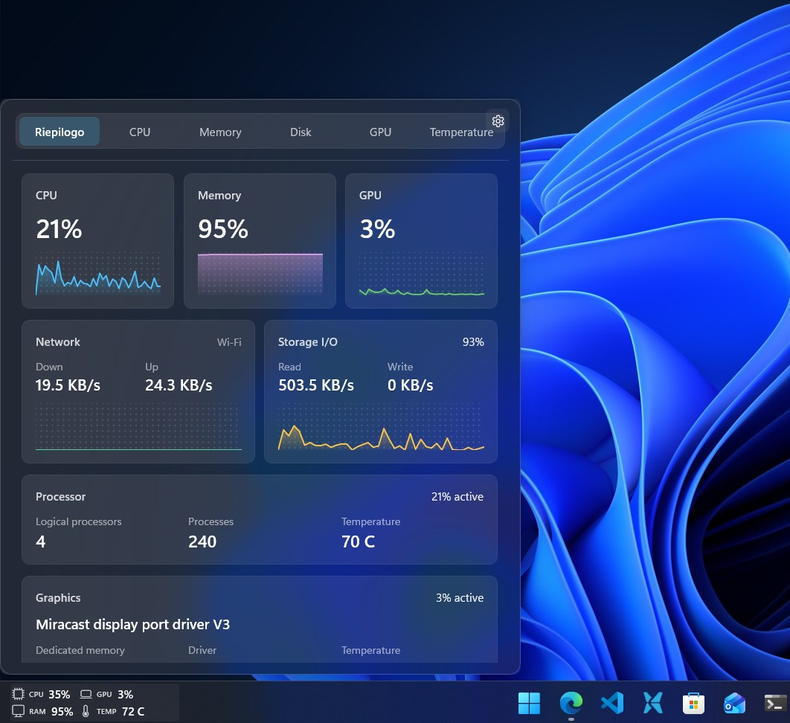

See what your PC is doing
System Metrics shows CPU, memory, GPU, disk, network and temperature information in a compact taskbar view.

WidBar Windows 11 taskbar widgetsBuilt for Windows 11
WidBar lets you place compact widgets in open spaces on the taskbar, so performance, media controls and small tools stay visible without taking over your desktop.



Everyday tools
WidBar keeps the experience close to Windows: quiet controls, native-feeling flyouts and widgets that stay compact until you need more detail.
System Metrics shows CPU, memory, GPU, disk, network and temperature information in a compact taskbar view.
Media Now Playing brings artwork, title, source and playback controls to your taskbar.
How it works
WidBar is the manager app. It handles layout, taskbar placement and settings.
Install available widgets from Microsoft Store and they appear in the WidBar catalog.
Drag widgets into free taskbar spaces, then configure each one for the way you work.
Widget showcase
Loading the catalog...
For developers
WidBar widgets are packaged as Microsoft Store extensions. Start from the public template, design your preview, flyout and settings, then publish your widget for WidBar users to discover.
Use the WidBar widget template to get the project structure, manifest and packaging setup ready.
Open templateBuild a compact taskbar preview, a richer flyout and optional settings so users can tune the widget.
Preview, flyout and settingsPackage your widget as a Store app extension and make sure the metadata is clear for WidBar users.
Read the guideThe showcase is powered by a public catalog. Once your widget is available, share the Store link and catalog metadata so it can be reviewed for inclusion.
Contact
Reach out for help with WidBar, feedback about the app, or to discuss a widget you would like to publish for the community.